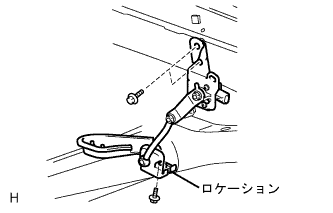
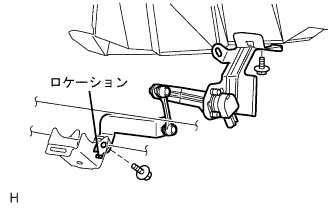

Hit control sensor ASSY RR installation |
| 1. High control sensor SUB-ASSY RR RH installation (drive system FF) |
|  |
Attach the height control sensor RR RH with three bolts.
Connect the connector.
| 2. High control sensor SUB-ASSY RR RH installation (drive system 4WD) |
|  |
With two bolts, attach the height control sensor RR RH.
Connect the clamp and connector.
| 3. Head lamp leveling computer ASSY initialization procedure |
reference| 4. Headlamp ASSY adjustment |
reference